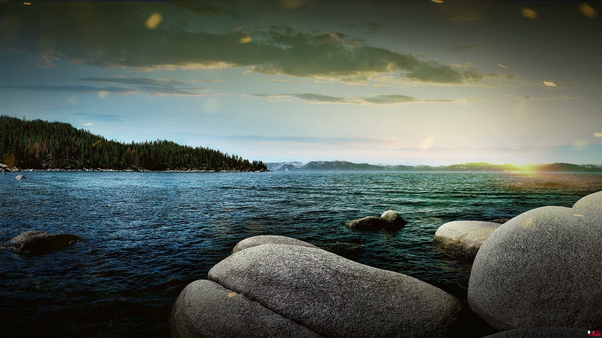

barcelona's architect
Antoni Gaudi's incredible buildinds bring ...
Gaudi's...search for simplicity ... is quite apparent in his work, from the Park Guell ...to the Church of the Sacred Family
La Sagrada

The complicatedly named...
The Sagrada Familia attracts...
Park Guell
The Park Guell always reminds me of ... Howard Roark in ... The Fountainhead
...now we addget to enjoy it ...